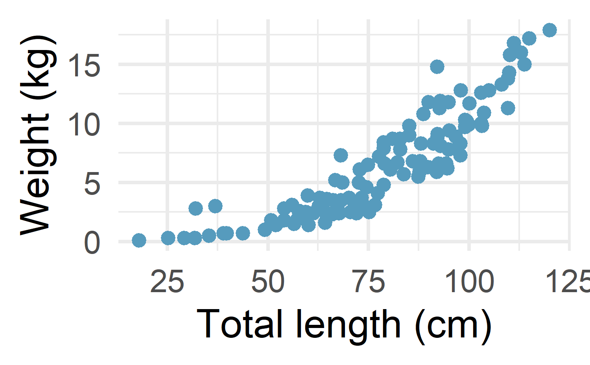
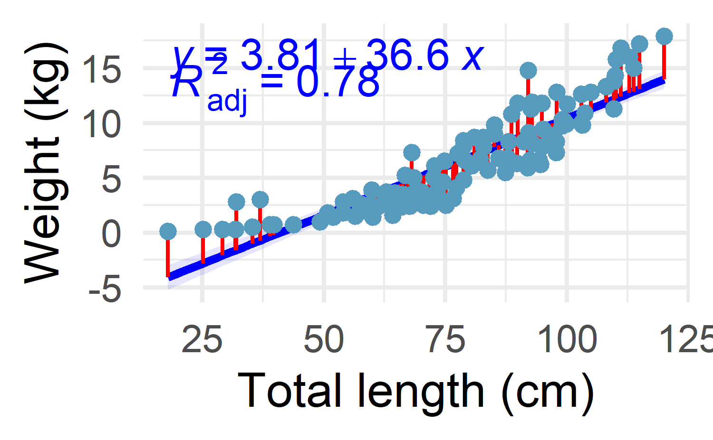
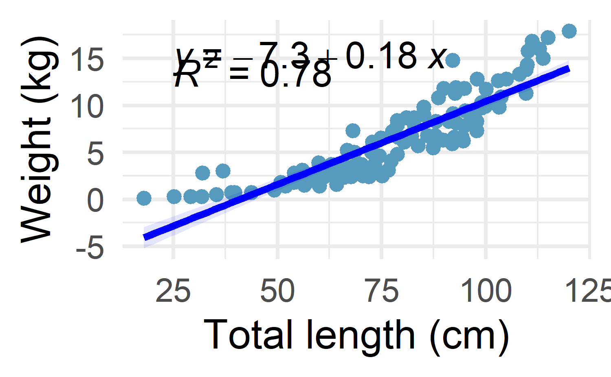
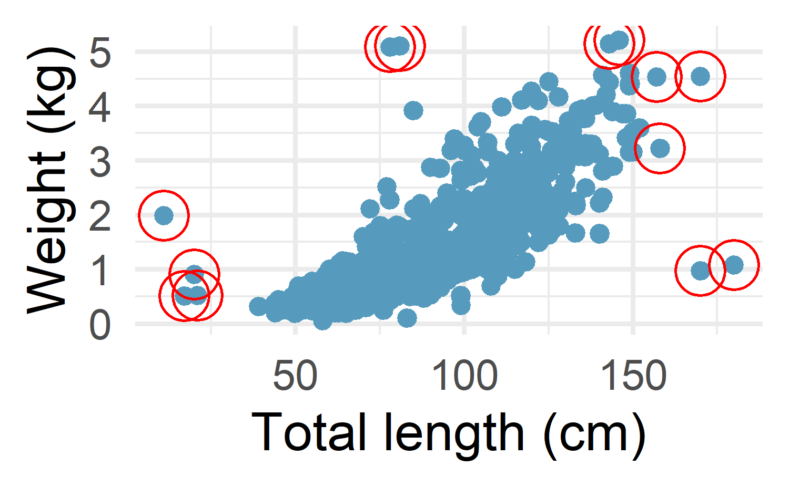

#> Rows: 112
#> Columns: 3
#> $ tl <dbl> 120.1, 115.0, 111.2, 110.2, 110.0, 109.7, 105.0, 100.1, 98.0, 92.1~
#> $ w <dbl> 17.9, 17.2, 16.8, 15.8, 14.3, 13.8, 12.8, 11.7, 12.8, 14.8, 9.7, 7~
#> $ loc <fct> Argentina, Argentina, Argentina, Argentina, Argentina, Argentina, ~9 Simple and Multiple linear regression
There are two types of linear regression:
Simple linear regression is a statistical approach that allows to assess the linear relationship between two quantitative variables. More precisely, it enables the relationship to be quantified and its significance to be evaluated.
Multiple linear regression is a generalization of simple linear regression, in the sense that this approach makes it possible to evaluate the linear relationships between a response variable (quantitative) and several explanatory variables (quantitative or qualitative).
In the real world, multiple linear regression is used more frequently than simple linear regression. This is mostly the case because:
Multiple linear regression allows to evaluate the relationship between two variables, while controlling for the effect (i.e., removing the effect) of other variables.
With data collection becoming easier, more variables can be included and taken into account when analyzing data.
Multiple linear regression being such a powerful statistical tool, I would like to present it so that everyone understands it, and perhaps even use it when deemed necessary. However, I cannot afford to write about multiple linear regression without first presenting simple linear regression.
So after a reminder about the principle and the interpretations that can be drawn from a simple linear regression, I will illustrate how to perform multiple linear regression in R. I will also show, in the context of multiple linear regression, how to interpret the output and discuss about its conditions of application. I will then conclude the article by presenting more advanced topics directly linked to linear regression.
9.1 Simple linear regression: reminder
Simple linear regression is an asymmetric procedure in which:
one of the variable is considered the
response. It is also called dependent variable, and is represented on theyy-axisthe other variable is the explanatory or also called independent variable, and is represented on the
xx-axis
Simple linear regression allows to evaluate the existence of a linear relationship between two variables and to quantify the strength of the relationship.
Note
linearity is a strong assumption in linear regression in the sense that it tests and quantifies whether the two variables are linearly dependent.
What makes linear regression a powerful statistical tool is that it allows to quantify by what quantity the response/dependent variable varies when the explanatory/independent variable increases by one unit. This concept is key in linear regression and helps to answer the following questions:
Is there a link between elevated sea surface temperature and coral bleaching?
Will an increase in sea surface temperature reduce primary productivity?
What is the most likely catch of tuna, depending on the monsoon season?
Does a fish’s growth depend on season?
Simple linear regression can be seen as an extension to the analysis of variance (ANOVA) and the Student’s t-test. ANOVA and t-test allow to compare groups in terms of a quantitative variable—2 groups for t-test and 3 or more groups for ANOVA.2 For these tests, the independent variable, that is, the grouping variable forming the different groups to compare must be a qualitative variable. Linear regression is an extension because in addition to be used to compare groups, it is also used with quantitative independent variables (which is not possible with t-test and ANOVA).
In this section, we are interested in assessing whether there is a linear relationship between the weight and total length of chinook salmon. For this example we use the ChinookArg dataset from the FSA package.
The scatterplot above shows that there seems to be a negative relationship between the distance traveled with a gallon of fuel and the weight of a car. This makes sense, as the heavier the car, the more fuel it consumes and thus the fewer miles it can drive with a gallon.
This is already a good overview of the relationship between the two variables, but a simple linear regression with the miles per gallon as dependent variable and the car’s weight as independent variable goes further. It will tell us by how many miles the distance varies, on average, when the weight varies by one unit (1000 lbs in this case). This is possible thanks to the regression line.
Consider the scatterplot in Figure fig-lw-chinook shows that there seems to be a positive relationshib between total length and weigth of chinook salmon. This tell us that the as the total length of the salmon increase so as the weight. This is already a good overview of the relationship between the two variables, but how is total length related to weight? I think is hard to tell based just on the picture!!!

A simple linear regression with the total length as independent variable and the weight as dependent variable goes further. The principle of simple linear regression is to find the line which passes as close as possible to the observations, that is, the set of points formed by the pairs.
To find the line which passes as close as possible to all the points, we take the square of the vertical distance between each point and each potential line. Note that we take the square of the distances to make sure that a negative gap (i.e., a point below the line) is not compensated by a positive gap (i.e., a point above the line). The line which passes closest to the set of points is the one which minimizes the sum of these squared distances.
The resulting regression blue line and the solid red lines represent the vertical distance between the points and the fitted line (Figure fig-lw-chinookfit). These vertical distances between each observed point and the fitted line determined by the least squares method are called the residuals of the linear regression model.

Important
Many people have some familiarity with regression models just from reading the news, where straight lines are overlaid on scatterplots.
9.1.1 The Regression Equation
Simple linear regression estimates how much Y will change when X changes by a certain amount. With the correlation coefficient, the variables X and Y are interchangeable. With regression, we we are trying to predict the Y variable from X using a linear relationship (i.e., a line):
\[ Y = b_0+ b_1X \]
The equation is read as \(Y\) equals \(b_1\) times \(X\) plus a constant \(b_0\). A \(b_0\) is the intercept (or constant) and \(b_1\) is a slope of \(X\).
The intercept is the mean value of the dependent variable YY when the independent variable XX takes the value 0. Its estimation has no interest in evaluating whether there is a linear relationship between two variables. It has, however, an interest if you want to know what the mean value of YY could be when x=0x=0.4
The slope, on the other hand, corresponds to the expected variation of YY when XX varies by one unit. It tells us two important informations:
The sign of the slope indicates the direction of the line—a positive slope (ˆβ1>0β^1>0) indicates that there is a positive relationship between the two variables of interest (they vary in the same direction), whereas a negative slope (ˆβ1<0β^1<0) means that there is a negative relationship between the two variables (they vary in opposite directions).
The value of the slope provides information on the speed of evolution of the variable YY as a function of the variable XX. The larger the slope in absolute value, the larger the expected variation of YY for each unit of XX. Note, however, that a large value does not necessarily mean that the relationship is statistically significant.
Tip
The slope is similar to the correlation coefficient, which gives information about the direction and the strength of the relationship between two variables.
To perform a linear regression in R, we use the lm() function (which stands for linear model). The function requires to set the dependent variable first then the independent variable, separated by a tilde (~).
9.2 Visualize
It is recommended to visualize the relationship before we model. There are numerous ways to visualize the relationship between the two variables of interest, but I often use grammer of graphics that ggplot2 package provide. with the additional functions from ggpmisc package, we can make plot like this.
my.formula = y~poly(x,1)
FSA::ChinookArg %>%
ggplot(aes(x = tl, y = w))+
geom_smooth(method = "lm", formula = my.formula, alpha = .1, fill = "blue", color = "blue")+
ggpmisc::stat_fit_deviations(formula = my.formula, color = "red")+
ggpmisc::stat_quant_eq(aes(label = after_stat(eq.label)), formula = my.formula, color = "blue",
quantiles = 0.05) +
ggpmisc:: stat_poly_eq(aes(label = after_stat(adj.rr.label)), formula = my.formula, label.y = .9, color = "blue") +
geom_point()+
labs(x = "Total length (cm)", y = "Weight (kg)")We can accomplish the same figure with additional function from other packages. For instance, other elements could be displayed on the regression plot (for example the regression equation and the R2). This can easily be done with the stat_regline_equation() and stat_cor() functions from the ggpubr package:

9.2.1 Fitting a line to data
Once we have explored and identified that nature of the relationship, we can fit the data into the model and asses the strength of the relation
The summary() function gives the results of the model:
#>
#> Call:
#> lm(formula = w ~ tl)
#>
#> Residuals:
#> Min 1Q Median 3Q Max
#> -3.530 -1.503 -0.255 1.465 5.782
#>
#> Coefficients:
#> Estimate Std. Error t value Pr(>|t|)
#> (Intercept) -7.26510 0.72628 -10.0 <2e-16 ***
#> tl 0.17680 0.00888 19.9 <2e-16 ***
#> ---
#> Signif. codes: 0 '***' 0.001 '**' 0.01 '*' 0.05 '.' 0.1 ' ' 1
#>
#> Residual standard error: 2.05 on 110 degrees of freedom
#> Multiple R-squared: 0.783, Adjusted R-squared: 0.781
#> F-statistic: 397 on 1 and 110 DF, p-value: <2e-16The results can be summarized as follows (see the column Estimate in the table Coefficients):
The intercept -7.26510 indicates that, for a hypothetical total length 0 cm, we can expect, on average, a weight of around -7.26 kg of salmon. This interpretation is shown for illustrative purposes, but a salmon with total length 0 cm is impossible, the interpretation has no meaning. In practice, we would therefore refrain from interpreting the intercept in this case.
The slope 0.17680 indicates that:
There is a positive relationship between the total length and weight of chinook salmon. This was also observed of the points in the scatterplot in Figure fig-lw-chinookfit.
But more importantly, a slope of 0.17680 means that, for an increase of one unit in the total length, the the weight of Chinook increase, on average, by 0.17680 units.
The R-squared of 0.783 imply that about 78% of the data points fitted well to the regression line and the fitting was statistically significant (p < 0.05)
#> # A tibble: 2 x 5
#> term estimate std.error statistic p.value
#> <chr> <dbl> <dbl> <dbl> <dbl>
#> 1 (Intercept) -7.27 0.726 -10.0 3.84e-17
#> 2 tl 0.177 0.00888 19.9 2.80e-38#> # A tibble: 1 x 12
#> r.squared adj.r.squa~1 sigma stati~2 p.value df logLik AIC BIC devia~3
#> <dbl> <dbl> <dbl> <dbl> <dbl> <dbl> <dbl> <dbl> <dbl> <dbl>
#> 1 0.783 0.781 2.05 397. 2.80e-38 1 -238. 482. 490. 461.
#> # ... with 2 more variables: df.residual <int>, nobs <int>, and abbreviated
#> # variable names 1: adj.r.squared, 2: statistic, 3: devianceA report package comes with a handy report function that assist has to interpret most of the model results. Let see how the function can interpret and expalin the result of the modeled total length and weight of the Chinook salmon by typing
#> We fitted a linear model (estimated using OLS) to predict w with tl (formula: w
#> ~ tl). The model explains a statistically significant and substantial
#> proportion of variance (R2 = 0.78, F(1, 110) = 396.70, p < .001, adj. R2 =
#> 0.78). The model's intercept, corresponding to tl = 0, is at -7.27 (95% CI
#> [-8.70, -5.83], t(110) = -10.00, p < .001). Within this model:
#>
#> - The effect of tl is statistically significant and positive (beta = 0.18, 95%
#> CI [0.16, 0.19], t(110) = 19.92, p < .001; Std. beta = 0.88, 95% CI [0.80,
#> 0.97])
#>
#> Standardized parameters were obtained by fitting the model on a standardized
#> version of the dataset. 95% Confidence Intervals (CIs) and p-values were
#> computed using a Wald t-distribution approximation.9.2.2 Predicting weight of fish
With lm function in R, we want to identify the relationship between total length and Weight of octopus in the western Indian Ocean region and assess whether total length can be used to accurate predict the weight of octopus based on historical data. Let’s read the dataset into our session.
We want to describe the relationship between the total length and weight variables in the octopus dataset using a line. In this example, we will use the total length as the explanatory variable, \(x\) to predict weight, \(y\). We first read and import the dataset into our session.
Before modelling our dataset, we first plot to visualize. Looking on Figure fig-lw-octopus, we notice that the data points follows a positive relation between total length and weight of octopus.

Then we model using lm tool as follows;
Then check for the summary statistics
#>
#> Call:
#> lm(formula = weight ~ tl)
#>
#> Residuals:
#> Min 1Q Median 3Q Max
#> -3.099 -0.317 -0.090 0.212 4.099
#>
#> Coefficients:
#> Estimate Std. Error t value Pr(>|t|)
#> (Intercept) -1.464662 0.064317 -22.8 <2e-16 ***
#> tl 0.031351 0.000722 43.5 <2e-16 ***
#> ---
#> Signif. codes: 0 '***' 0.001 '**' 0.01 '*' 0.05 '.' 0.1 ' ' 1
#>
#> Residual standard error: 0.555 on 1077 degrees of freedom
#> Multiple R-squared: 0.637, Adjusted R-squared: 0.636
#> F-statistic: 1.89e+03 on 1 and 1077 DF, p-value: <2e-16From the summary, we can conclude that tl as our predictor variable have p-value below 0.05, this means tl has a significant effect toward Weight as our target variable. For simple interpretation of the coefficient, every increased 1 unit point in tl, will contribute to 0.0314 increase in Weight.
We also need to check the R-Square of the model, we can see that our R-Square is around 0.637or 63.1%. This means that the model that we create before can explain 63.1% of variance of our target variable.
#> We fitted a linear model (estimated using OLS) to predict weight with tl
#> (formula: weight ~ tl). The model explains a statistically significant and
#> substantial proportion of variance (R2 = 0.64, F(1, 1077) = 1887.64, p < .001,
#> adj. R2 = 0.64). The model's intercept, corresponding to tl = 0, is at -1.46
#> (95% CI [-1.59, -1.34], t(1077) = -22.77, p < .001). Within this model:
#>
#> - The effect of tl is statistically significant and positive (beta = 0.03, 95%
#> CI [0.03, 0.03], t(1077) = 43.45, p < .001; Std. beta = 0.80, 95% CI [0.76,
#> 0.83])
#>
#> Standardized parameters were obtained by fitting the model on a standardized
#> version of the dataset. 95% Confidence Intervals (CIs) and p-values were
#> computed using a Wald t-distribution approximation.